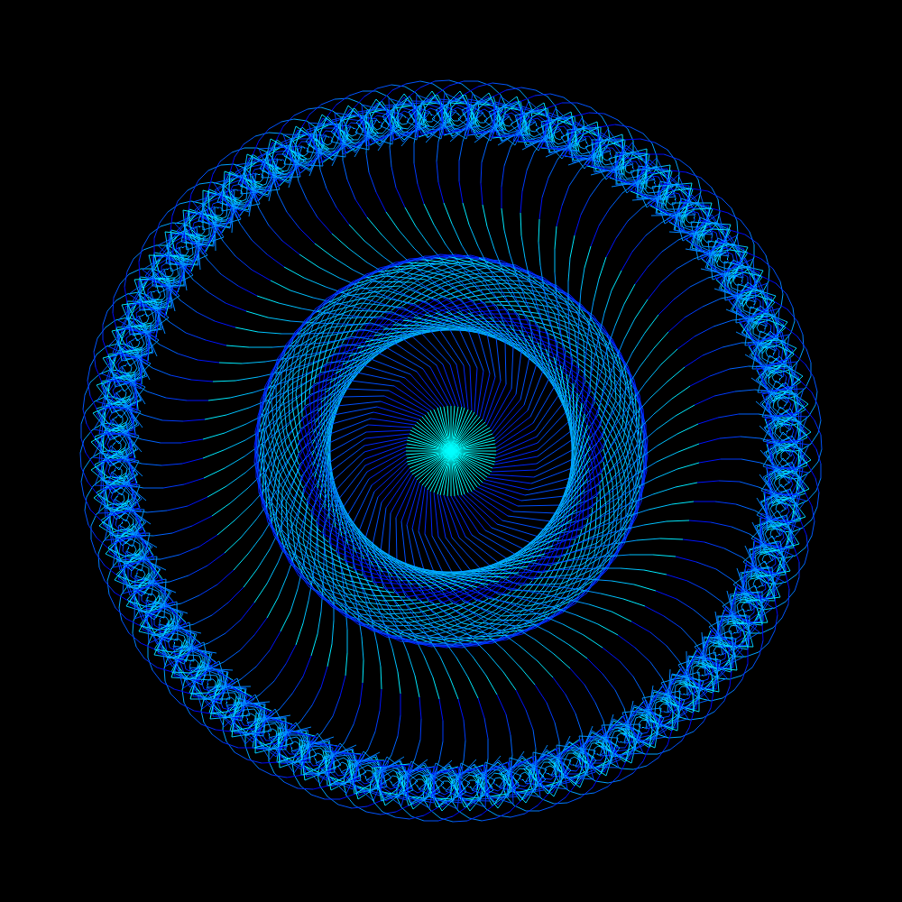

Jake Haas Blog
A Student Perspective of computer science
ASCII Maze

This is the first project that I decided to take on with javascript. I thought it would be a good place to start because it incorperated many fundimental programming consepts such as arrays, object oriented programming, keyboard input, loops, and javascript text-nodes, and allowed me to become more familliar with the strange syntax of javascript.
One majour challenge I faced with this project was figuring out text nodes. Before I took on this challenge I had no idea what a text node in javascript was, and when I started the project I threw together the data structures neccisary to hold the rgb values and the ASCII values of every character in a multi-dimentional array without knowing how to display them. On top of that I had programmed the arrays incorrectly, when I initialized the arrays to hold an ASCIIchar instance(from a class I made called ASCIIchar) I had initialized them as myarray[x][y] = new ASCIIchar(); when it was really supposed to be myarray[x][y] = new ASCIIchar;. I used a text editor called Sublime Text(highly recomend btw) and did not know how to get error messages, so when I ran my program and nothing happened I unknowingly had two errors. Eventually I realized how to initialize my arrays properly and that my display function was not working correctly. This befundled me for a while because when I was using Java swing previously there were elements called JLables that supported html that would have worked with the code I was using. The real issue ended up being that I was using a textArea which does not support innerHtml and used a "div" instaid. In the tutorial for this project I cover how I should have done it in the first place.
One majour challenge I faced with this project was figuring out text nodes. Before I took on this challenge I had no idea what a text node in javascript was, and when I started the project I threw together the data structures neccisary to hold the rgb values and the ASCII values of every character in a multi-dimentional array without knowing how to display them. On top of that I had programmed the arrays incorrectly, when I initialized the arrays to hold an ASCIIchar instance(from a class I made called ASCIIchar) I had initialized them as myarray[x][y] = new ASCIIchar(); when it was really supposed to be myarray[x][y] = new ASCIIchar;. I used a text editor called Sublime Text(highly recomend btw) and did not know how to get error messages, so when I ran my program and nothing happened I unknowingly had two errors. Eventually I realized how to initialize my arrays properly and that my display function was not working correctly. This befundled me for a while because when I was using Java swing previously there were elements called JLables that supported html that would have worked with the code I was using. The real issue ended up being that I was using a textArea which does not support innerHtml and used a "div" instaid. In the tutorial for this project I cover how I should have done it in the first place.
Perlin Noise Flow

This program is a perlin noide flow field. Perlin noise first came to my attention about a year ago when I was watching youtube and got a recomendation for a video by theCodingTrain called "13.1: Introduction - Perlin Noise and p5.js Tutorial". At the time I thought it was really cool but it was to complicated for me to ever figure out and didn't think much of it. For whatever reason a year later when I began learning javascript I decided to go back to this video and try to reproduce the results, since then I have created three perlin noise flow fields, one in javascript, one in C++, and one in Java using processing(basicly p5.js in Java). Something about flow fields is just straight up cool, and making them more accesable to people is what this project is all about. This program allows you to adjust values and come up with cool results even without creating a whole new program to do it. I have portfolio I guess i'll call it here where I show some of the results I got while playing around with the actual code so some of them can't be produced with this project. The pictures are all open source so if you want to download them as wallpapers thats ok with me ; )
Image Filter
Recently, I have been working on gaining a better understanding of graphical applications in Javascript and I thought that it would be interesting and educational to try and create an image filter. An image filter is basically just an application that takes an image as input and outputs a modified image. In this case the filter I have created takes an image as input and converts the pixel data into an assortment of bubbles based on the colour values in their surrounding area. When I began working on this project I was going to make a program that generated circles at random locations that would slowly expand until they touched another circle then stop expanding. Samplimg an image is something I have never done before in Javascript, and I encountered an amazing amount of errors. When I worked them out(finally) the bubbles were overlapping eachother and I have no idea why, but at that point I was fustrated and annoyed plus the filter still looked awsome anyway so I decided to just leave it as a happy accident. In the tutorial that will eventually be released I will try to make this program work the way originally intended.
Another premise of this program is that it uses the canvas element(which there is an html tag for) to hold the pixel data of an image which is uploaded using the file input tag. I have never used the canvas element before this project and now understand just how powerfull and usefull it is. When I was learning about how to upload a file onto the canvas I ended up pretty much copying exactly what I had found online here. Hopefully when I write the tutorial I will be more comfortable with the consepts and provide a more clearly laid out example. I actually already have an idea of how it could be done easier but it needs to be tested.
~Never mind, I have found the bug!! Now the circles will stop expanding when they hit eachother!
Another premise of this program is that it uses the canvas element(which there is an html tag for) to hold the pixel data of an image which is uploaded using the file input tag. I have never used the canvas element before this project and now understand just how powerfull and usefull it is. When I was learning about how to upload a file onto the canvas I ended up pretty much copying exactly what I had found online here. Hopefully when I write the tutorial I will be more comfortable with the consepts and provide a more clearly laid out example. I actually already have an idea of how it could be done easier but it needs to be tested.
~Never mind, I have found the bug!! Now the circles will stop expanding when they hit eachother!
Fractal Generator

The inspiration for this project is actually a pretty funny story. To begin with, in my fourth period physics class I sit next to my best friend Adam, he is a lets say.. for the lack of a better word, creative indevidual. Our physics teacher Mr.Neave is the slowest, most boring teacher in the world, he will often start a lesson with going over a simple homework problem. "Okay class, today we are going to start with a question I was asked yesterday but couldn't get around to." as if he ever actually got around to anybody's questions, I digress "So, we will start by looking at the variables given.... v1 for this object is 5.2m/s as stated in the question.. now remember; m is for meters, and s is for seconds.. we use these mesurments because we, in Canada use the metric system..." ZZZzzzz... wha... what, I was sleeping, and as I looked over to my side I saw Adam writing something in his notebook. Now this was unusual seing as half the class is passed out and the other half somehow
actively not doing anything! I blinked my eyes a couple of times and slowly looked over at his notebook, and what I saw was concerning... Adam was staring, eyes wide open and a blank dead expression on his face as he scribled deep, straight lines onto nearly ripped paper, an enormous mass of intermingled lines in a maddening and fixating pattern. I quietly asked him, "whats that?" no response.. I try again, this time with an accompanying nudge, "hey, Adam." His pencil stops dead in its tracks, but he continues staring down at his paper, images from Knowing flash into my mind.. He lunges at me and tears out my eyeballs!! Okay im kidding, but he was actually drawing a really cool fractal and I thought it would be neat to make a program that would generate them in color :3
Zombie Defence

So this is the first Java program that i'm linking in this projects section. I personally prefer Java and C++ (both are syntactically simular) over Javascript because they are very explicit. When declaring an object in either of these languages you have to specify the class type before adding the variable name, afterwards the compiler can give you hints on how to use that type of data and what that data type even is. Javascript is much more abstract, when declaring a variable you use the data type "var" which limits the compiler's capability to help you out, not only that but it makes your own code harder to read in a lot of cases. Having a generic data type like "var" can also lead to weird bugs where you accidentally turn your Player object into an Int. It may be more work to declare objects in languages like C++ and Java but man is it worth it in my opinion.
This leads me to a fatal flaw with these other compiler based languages, they don't run in the browser! Unfortunately even though some of my best work has been with the use of Java (Most of my C++ projects were lost when my old laptop broke) They cannot simply open up in the browser and work like the other examples can. In order to use these projects you will have to download the .JAR files and open them with the Java Standard Binaries. I'll be adding videos of the projects running in their respective project sections to shown them off but to get the fully emmersive experience you will have to dowload and run them.
This leads me to a fatal flaw with these other compiler based languages, they don't run in the browser! Unfortunately even though some of my best work has been with the use of Java (Most of my C++ projects were lost when my old laptop broke) They cannot simply open up in the browser and work like the other examples can. In order to use these projects you will have to download the .JAR files and open them with the Java Standard Binaries. I'll be adding videos of the projects running in their respective project sections to shown them off but to get the fully emmersive experience you will have to dowload and run them.
Sorting Efficiency

This project was originally a school project. I took computer science as an online course in grade 12 and for the summitive evaluation of unit 4 we had to create a java application that tested the efficency of two types of sorting algorithms, a bubble sort, and a selection sort. Because I had a lot of time to do this project however I decided to create 5 algorithms instead, I added the bubble sort, selection sort, insertion sort, merge sort, and quiksort. The program gives you the option to read 10 or 10 000 numbers out of text files and sort them in assending or decending order.
Tic-Tac-Toe

This project was another school project, the requirement for the project was to create two player tic-tac-toe in the console because it was early in the school year. I finished the project with more than four days to spare and asked the teacher if I could create it with graphics. Finishing the graphical component only took part of a day so I asked if I could add more. The teacher said yes so I began working on an AI to play against. The A.I took a bit of reworking but I still had time when I was done and added two more levels of difficulty, plus a toggle between two player and single player. By the time I finished I only had half a day left but was much more satisfied by the outcome.
Polymorphic Shapes

This was yet another school project that I added some flare to. We were doing a unit on polymorphism and inheritence which was a tricky unit for a lot of the students new to Java. I had already used inheritence and polymorphism in C++ prior to this class and the project went very smoothly so like the tic-tac-toe project I had a lot of time on my hands. I e-mailed my teacher and told him I had a radical idea for showing off polymorphism and he said I could do it. I started with a base shape class and extended it into circles, polygons, and rectangles. After generating the shapes randomly on the screen I still wasn't satisfied, I had a bit of time left and decided to add movement and rotation. I created a system for wrapping the shapes around the screen when they hit the edges and gravitational points that attracted the shapes. The result was visually appealing and reminds me of an old screensaver or something.
Car Battery Charge Calendar

So this project stands apart from the rest, it is the only program that i've created so far that solves a real world problem. I created it near the middle of grade 12 for my dad's boss and he was very satisfied! My dad is a mechanic for an auto dealership and they had run into a problem with their car batteries. The new cars that were being bought from the GM auction came with a new type of battery called a glass-matte battery. When glass-matte batteries lose their charge fully they cannot be recharged again and must be replaced. Because they had always been able to charge dead batteries in the past the dealership did not have a system to keep track of charges which lead to a large sum of batteries which needed to be replaced. In order for GM to replace the batteries a record needs to be shown that it was charged at least once every 30 days, and without a record keeping system for charges the dealership was losing a lot of money. I created a program that could hold cars in a file system and store a record of their charging history. In addition to this I added a system to remind the user when a car was close to being due for a charge. Cars can be added and removed, as well as recharged from any of the four menus. Cars in the dealership are usually identified by a VIN number and I made it impossible to accidentally add the same car twice. When I presented the program to the CEO he was very impressed. When I was done explaining to him how the program functioned and how to install it he showed me a stack of papers on his desk. He had probably $3000.00 worth of recipts for glass-matte batteries that had to be replaced due to the charging issues. Ultimately i'm not sure if the software will ever be put into use, but it was a good experience to create software with a real purpose and need. I will never forget the experience of working with a CEO to produce a finalized professional piece of software to suit his needs.
Flow Sketch

This is the only project I have up on this site so far that was written in C++. It's nothing really special but I still thought it was worth including to show off my knowlege of C++ and SDL (simple drect media layer) in case you are a reader from a university application or a potential employer. When I was thinking of some simple stuff that I could get done reletavely quickly there were a bunch of things that were ruled out because of their complexity (they would take too much time to complete), or because of their lack of complexity (they didn't require OOP principles, or didn't use certain simple aspects of SDL). I finally landed on this idea because it didn't require a significant amount of time to throw together but still demonstrated my skill in a few key areas of C++ and SDL2. It uses functional programming, object oriented programming, SDL event handeling, rendering, mouse events, keyboard events, and touch events. The end result is also pretty satisfying as well, it is simular to the perlin noise program that I made with Javascript but is manually controlled instaid of being directed by the perlin noise algorithm. To view the source code you will need visual studio unfortunately because it is in a .sln file.